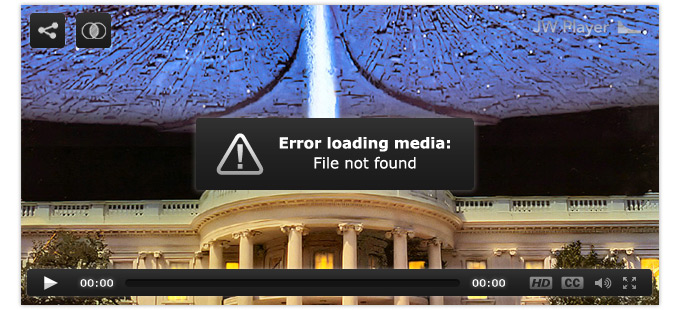

Troubleshooting Your Setup
This troubleshooting guide is designed to help you resolve problems that we frequently see. Read through this document to find your issue and then follow the proposed solution.
If, after reading through this document, you're still unable to solve your issue, please visit our support forum. Include an example URL with your forum post, so we can immediately take a look at the issue.
Before You Start...
Before looking into specific errors, we recommend you try the following simple steps, which may instantly fix your issue:
- Reload the web page. If this doesn't resolve your issue, move on to step 2.
- Clear your browser's cache, then reload the web page. Didn't work? Proceed to step 3.
- Clear your browser's cache and cookies, restart your browser (or reboot your device), then navigate back to the page you were on.
If none of these actions fix your problem, identify the type of issue and read through the appropriate section below. We have sections on:
- The player not showing on the page at all.
- The player displaying a (bare bone) setup error on page load.
- The player loading, but displaying a media error when starting playback.
- The media playing incorrectly. For example, the audio may sound weird, the video may look stretched or seeking may not work.
More advanced developers should also take a look at their browser console. The browser may display error messages (e.g. around files not found or CORS errors) that are helpful in tracking down the problem.
1: Player Not Showing At All
If your player does not appear at all, please check if you:
- Uploaded jwplayer.js and included the <script> tag for loading jwplayer.js in the head of your page.
- Included a container <div> with an id attribute and referred to that id in the jwplayer(id).setup() call.
- Correctly formatted all options in the jwplayer(id).setup() call. We often see issues with commas, brackets or curly braces.
See Embedding the Player for an explanation of the correct embed syntax. Note this is also the only embed syntax JW Player supports. Setups using a <video>, an <embed> tag or SWFObject will not work with JW Player 6.
Also ensure your webpage itself is correctly formatted and encoded. If there are errors in your page HTML, CSS or JavaScript code, rendering of the page may have broken off before JW Player has had the chance to setup itself. You can rule out page errors by first testing out your player setup in a very simple HTML page that only contains the player setup snippets.
2: Player Setup Error
The player may be showing on your page, but only display a setup error like this one:
Luckily, the setup error already pinpoints the area in which the issue is present. Here is a list of all possible setup errors:
- Error loading player: Flash version must be 10.0 or greater
- This means the version of the Flash plugin on your computer is too outdated for JW Player to use. Please visit the Adobe site to update your Flash player. Note this error will not occur if you do not have Flash at all (e.g. on an iPad).
- Error loading player: No media sources found
- This means you either did not specify a media source to play, or your setup block is incorrect. Please see Embedding the Player for info on the file and playlist configuration options. You may also have provided a file that's not supported by JW Player (like .wmv video). See Supported Media Formats for the list of formats the player does support.
- Error loading player: Offline playback not supported
- This means the page with JW Player embedded is not loaded from a webserver. Due to various online-offline security restrictions, such a setup is not supported in the Flash rendering mode. Either upload your page to a webserver or run a local webserver to circumvent this.
- Error loading skin: File not found
- This means you have setup a skin with your player, but the XML file of your skin is not present at the URL you set. See Using Skins for more info.
- Error loading skin: Crossdomain loading denied
- This means the player fails loading your skin from another domain than the one you embedded the player on. It must be explicitly allowed for Flash by setting a crossdomain XML. See Crossdomain File Loading for more info.
- Error loading skin: Error loading file
- This likely means the HTML5 player fails loading your skin from another domain than the one you embedded the player on. It must be explicitly allowed for HTML5 by setting a CORS header. See Crossdomain File Loading for more info.
- Error loading skin: Invalid file type
- JW Player 6 only supports loading XML skins. SWF skins (supported in JW4) and ZIP skins (supported in JW5) are not supported anymore. See Using Skins for more info.
- Error loading skin: Skin formatting error
- This means your skin is broken, likely due to a syntax error in the XML file. See Building Skins for more info.
- Error loading playlist: File not found
- This means you have setup an RSS feed using the playlist option of the player, but the RSS feed was not found at the URL you set. See Loading RSS Feeds for more info.
- Error loading playlist: Crossdomain loading denied
- This means the Flash player fails loading your RSS feed from another domain than the one you embedded the player on. It must be explicitly allowed for Flash by setting a crossdomain XML. See Crossdomain File Loading for more info.
- Error loading playlist: Error loading file
- This likely means the HTML5 player fails loading your RSS feed from another domain than the one you embedded the player on. It must be explicitly allowed for HTML5 by setting a CORS header. See Crossdomain File Loading for more info.
- Error loading playlist: Not a valid RSS feed
- JW Player 6 only supports feeds in the Media RSS format. This error means you either load a feed in another format (e.g. XSPF), or there are XML formatting errors in your RSS feed (e.g. the xmlns:media declaration is forgotten).
- Error loading playlist: No playable sources found
- Your playlist was loaded and parsed correctly, but the player could not find any acceptable media sources in your feed. This probably means your playlist did not contain media in one of the 9 Supported Media Formats.
- Error drawing fallback: No downloadable media found
-
- This means the player was unable to play your media in Flash or HTML5, but on top of that also unable to offer your media as a simple download to the user. This happens e.g. when you setup solely an RTMP stream and then browse to your page on an iPad. See Browser & Device Support for more info.
3: Media Loading Error
A media error appears after the player is successfully setup, but then fails to play your media. Here is an example:

And here are descriptions of all possible media errors:
- Error loading media: File not found
- This means the URL to your audio/video file could not be found. Please make sure the file is available at the location you provided (did you set relative paths correctly?) and available for loading in the player (are the access rights set correctly?).
Last, check if your webserver sends out the correct mimetype header along with the file. HTML5 browsers are very picky at times, while newer formats (WebM, MP4) may not have an associated mimetype in your webserver.
- Error loading media: File could not be played
- This usually means you are trying to load a file in a nonsupported format in JW Player. A common case is the loading of a .wmv video, or a .mov video that doesn't use the H264 video codec. See Supported Media Formats for the list of formats the player supports.
- Error loading YouTube: Video ID is invalid
- This means the YouTube video ID you provided does not have 11 characters, or the video ID contains invalid characters, such as exclamation points or asterisks.
- Error loading YouTube: Video removed or private
- This means the YouTube video has been removed (for any reason), or it has been marked as private by the owner of the video.
- Error loading YouTube: Embedding not allowed
- This means the original owner of this video does not allow playback in embedded players. This is usually for reasons of branding or advertising.
- Error loading YouTube: API connection error
- This error occurs when the player, for some reason, is unable to connect to the YouTube API. It sometimes happens when YouTube is doing maintenance on its API, or the connection is interrupted.
- Error loading stream: Could not connect to server
- This means that your RTMP server could not be reached. Ensure you inserted the right domain and the right application path. Also ensure port 1935 and/or RTMP traffic is not blocked by your proxy or firewall.
- Error loading stream: ID not found on server
- This means the player successfully connected to your RTMP server, but the server failed to return the requested stream. Ensure your stream is indeed available at the correct location and any security mechanism (like Wowza securetoken or Cloudfront signing) is correctly set. If the stream is a live stream, ensure the encoder is connected and streaming video too.
- Error loading stream: Manifest not found or invalid
- This means your RTMP/HLS manifest could not be found or not be parsed. Please make sure it is available at the location you provided (did you set relative paths correctly?), available for loading in the player (are there any crossdomain issues?) and correctly formatted (is it correct SMIL or M3U8 data?)
4: Media Not Playing Correctly
Both the player and the media may load fine, but a playback issue may be present. Unfortunately, JW Player cannot detect such issues automatically. Here are the most common issues we encounter:
- Video stutters frequently
- It looks like the bitrate of your video is too high for your connection. If your connection is not terrible (i.e. anything above some 500kbps), you should consider re-encoding your videos into a format that is more web friendly. See MP4 Video Encoding for a complete overview.
- Video is stretched or has black bars
- Your video dimensions may not match your player dimensions, or the video may contain incorrect metadata. The first one is easily solved by setting the width and height of your player to match your video aspect ratio. The second one can be fixed by setting the stretching option to correct for the wrong metadata. See Embedding the Player for more info on the stretching option.
- MP3 playback is too fast or too slow
- Your MP3 file likely contains variable bitrate encoding or unsupported sample frequencies (e.g. 48Khz). Please stick to constant bitrate encoding and 11, 22, 33 or 44 kHz. If you need to convert your MP3, check out our free Bits on the Run service.
- FLV video seeking is not working
- Most likely, this occurs when your file doesn't have metadata or the Flash Player doesn't understand your metadata. You can fix this by running your FLV files through the FLV MetaData Injector.
- MP4 video seeking is not working
- If your MP4 files cannot be seeked before they are completely downloaded, you will have to move your MP4 metadata from the end to the beginning of your MP4 file. Use this little application to do that.